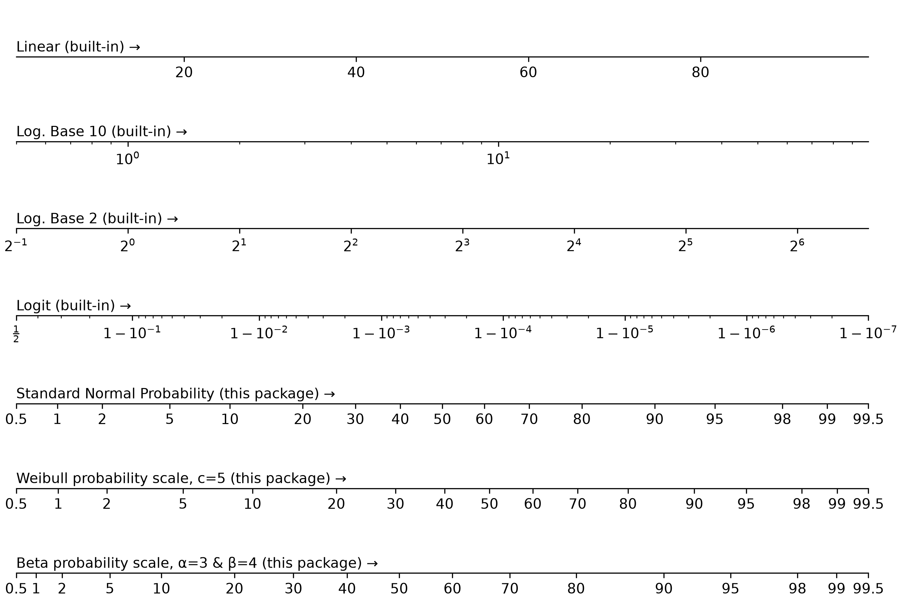

mpl-probscale: Real probability scales for matplotlib#
Installation#
Install the latest release with pip install probscale (also available on
conda-forge as mpl-probscale). See the Installation page for
details.
Quickstart#
Simply importing probscale lets you use probability scales in your
matplotlib figures:
import matplotlib.pyplot as plt
import probscale
fig, ax = plt.subplots(figsize=(8, 4))
ax.set_xlim(0.5, 99.5)
ax.set_xscale("prob")
ax.set_ylim(1e-2, 1e2)
ax.set_yscale("log")

Tutorials#
Examples#
API Reference#
Testing#
Run the test suite (including the image comparison tests) from the repository root:
$ uv run pytest --mpl